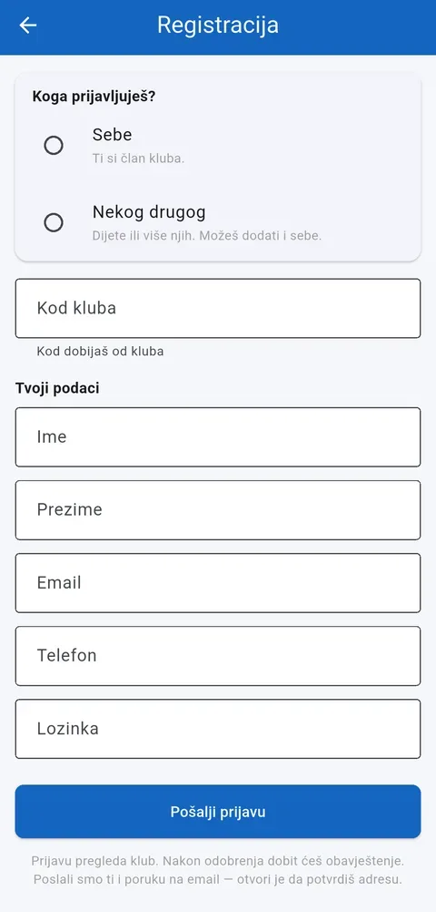
1
Otvorite "Registruj se" i unesite kod kluba koji ste dobili.
Kratki, vizualni koraci za svaku ulogu u aplikaciji — bez čitanja priručnika. Odaberite svoju ulogu ispod.
Prijava u klub ide preko koda koji dobijete od kluba. Nakon što admin odobri prijavu, imate uvid u raspored, prisustvo i uplate.

Otvorite "Registruj se" i unesite kod kluba koji ste dobili.
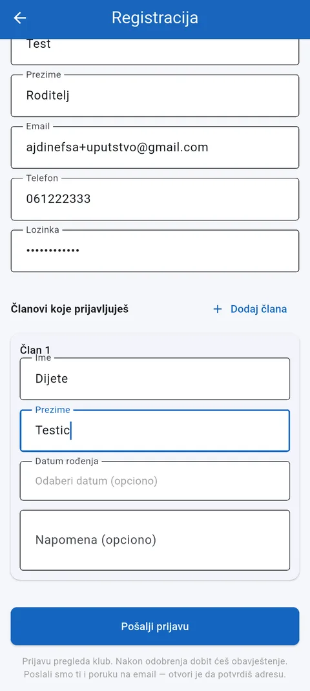
Odaberite "Nekog drugog" za dijete, ili "Sebe" ako se prijavljujete kao punoljetan član, i pošaljite prijavu.
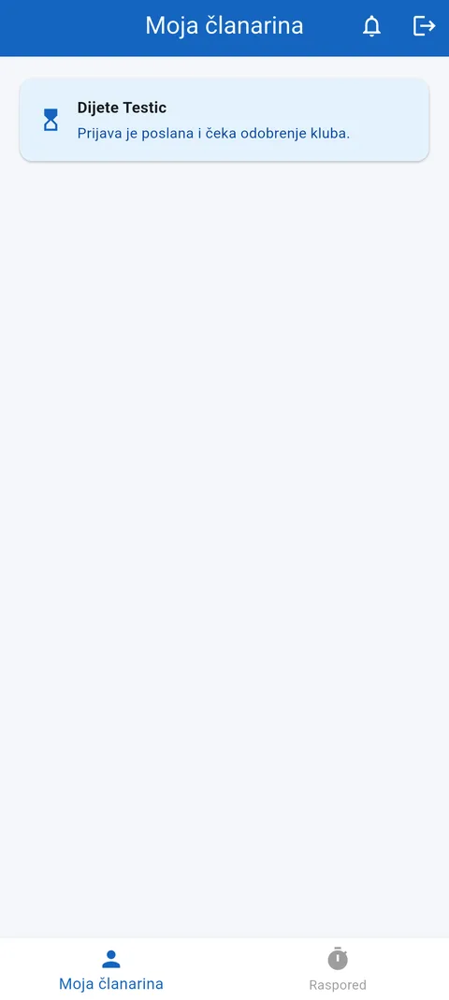
Prijava čeka odobrenje kluba. Obavještenje stiže čim je admin pregleda.
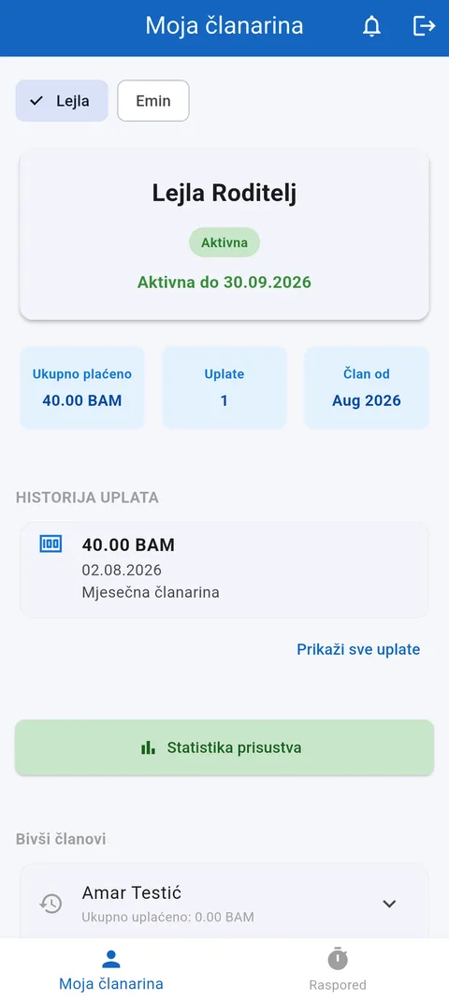
Nakon odobrenja: status članarine, istorija uplata, i prebacivanje između djece ako ih ima više.
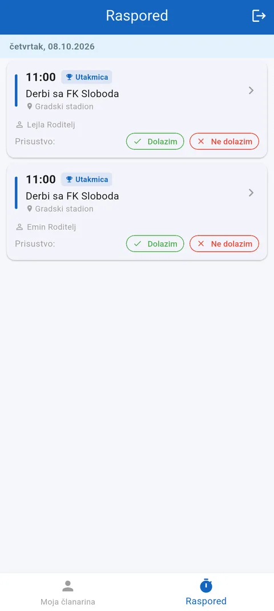
U rasporedu potvrdite ili otkažite dolazak na trening ili utakmicu.
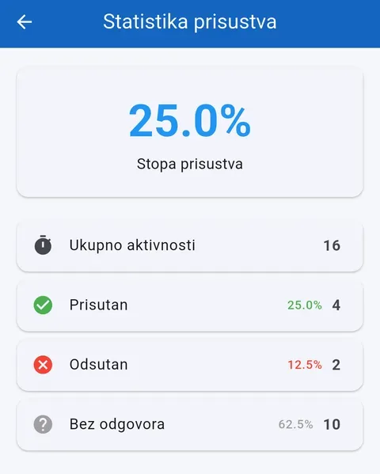
Statistika prisustva pokazuje koliko je treninga odrađeno.
Trener vidi samo svoje grupe — članove, raspored i prisustvo. Sve se vodi iz telefona, na samom treningu.
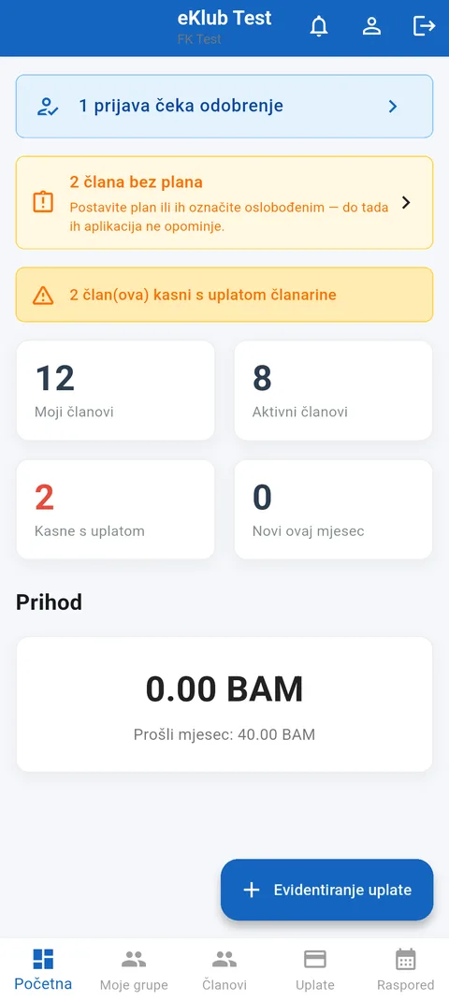
Početna pokazuje vaše grupe: ko kasni s uplatom, ko čeka odobrenje.
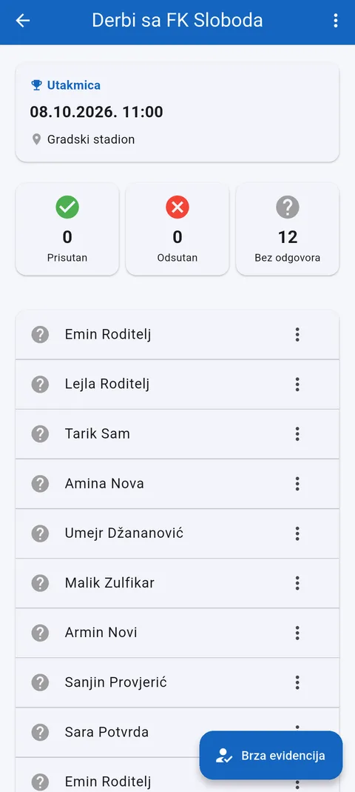
Otvorite trening iz rasporeda da vidite spisak za evidenciju.
Dodirnite člana i označite prisutan, odsutan ili bez odgovora.
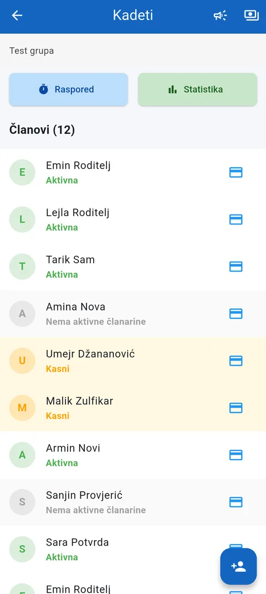
Pregled grupe pokazuje status članarine svakog člana.
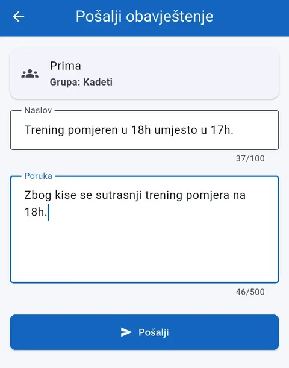
Pošaljite obavještenje cijeloj grupi — npr. da je trening pomjeren.
Admin vidi sve članove, grupe, uplate i raspored, i odobrava nove prijave prije nego uđu u evidenciju.
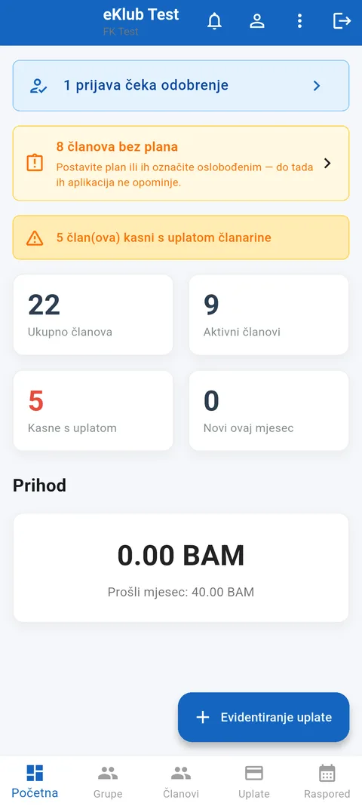
Početna pokazuje cijeli klub: broj članova, zakašnjele uplate, prihod.
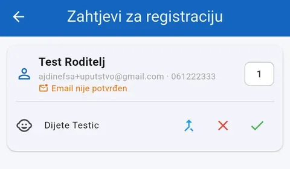
Nove prijave čekaju ovdje, sa podacima roditelja i djeteta.
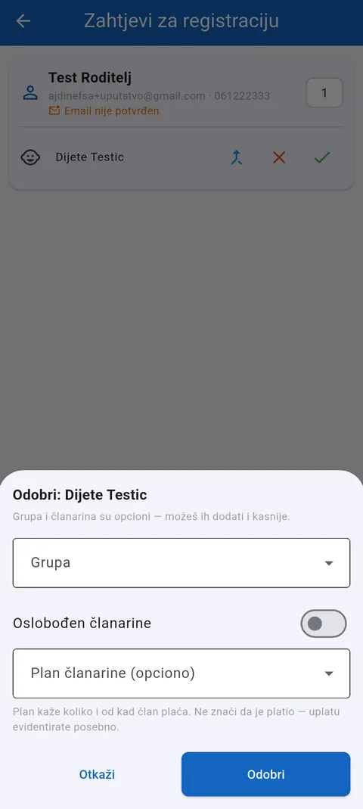
Pri odobravanju odmah dodajete u grupu i postavljate plan članarine — ili to ostavite za kasnije.
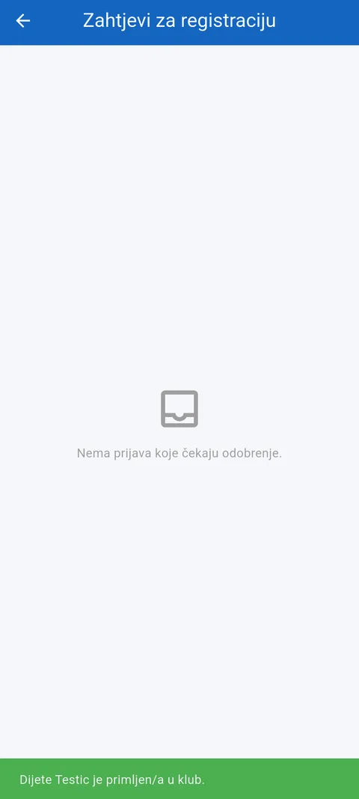
Član je u klubu — roditelj odmah dobija obavještenje.
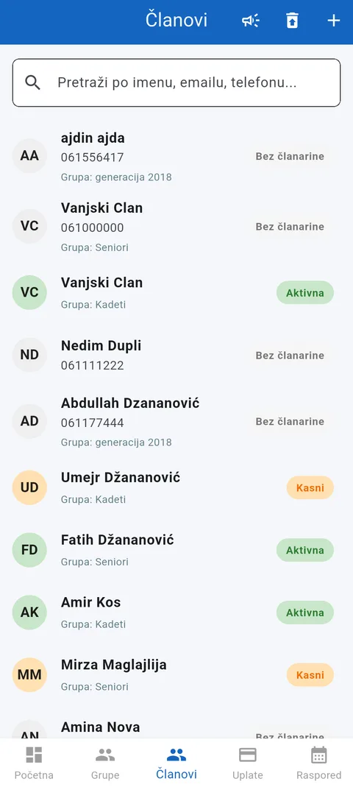
Spisak svih članova, sa statusom uplate obojenim po boji.
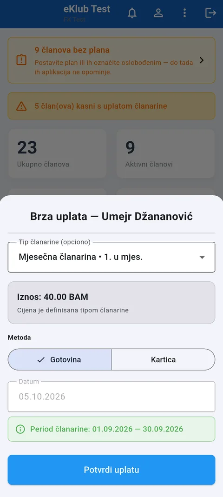
Evidentirajte uplatu u par dodira — iznos se sam predloži iz plana.
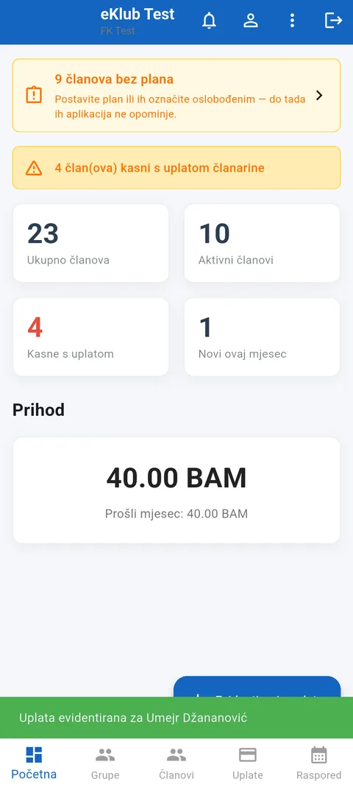
Prihod i status člana se ažuriraju odmah.
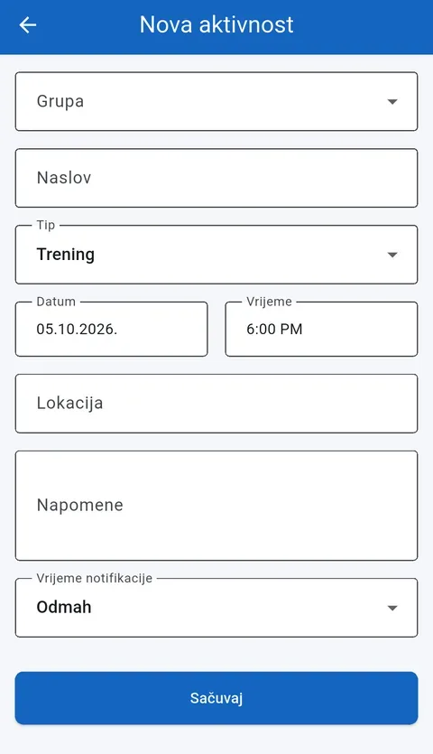
Zakažite trening ili utakmicu — svi u grupi vide isti raspored.